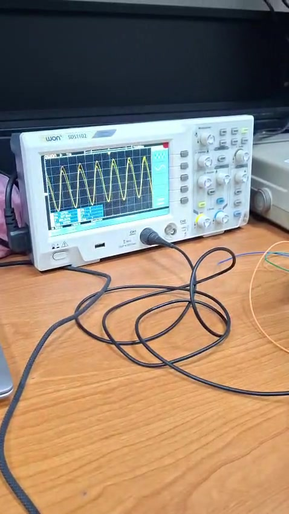
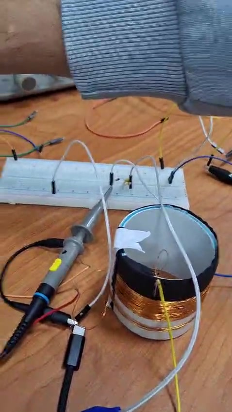
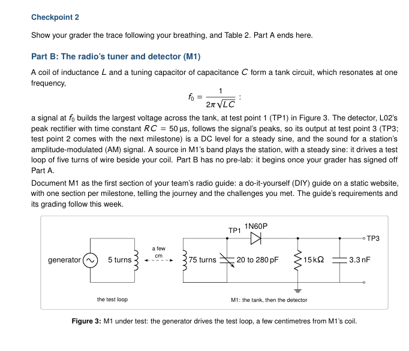
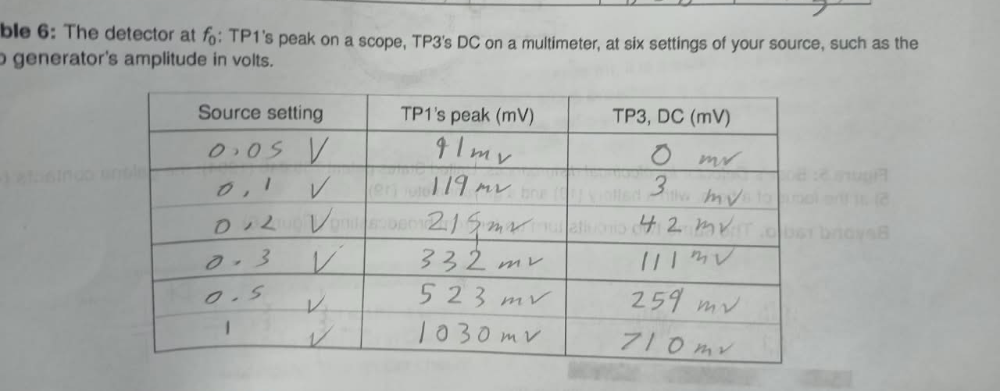
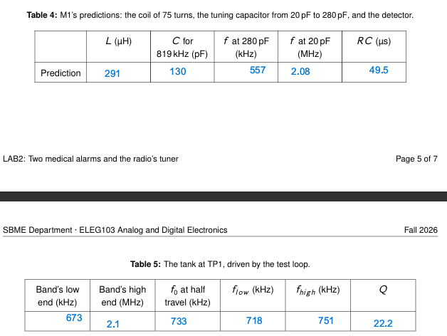
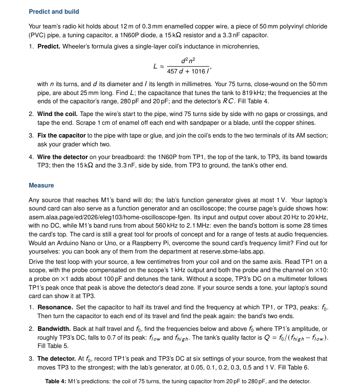

The tuner
The coil and variable capacitor select a frequency. Changing capacitance shifts the resonant frequency, allowing the tank to tune across a range.
A hands-on investigation into resonance, bandwidth, and AM signal detection — documenting how we built the tank circuit, drove it with a test loop, and measured what happened.
An inductor and a capacitor form a resonant LC tank. At resonance, energy moves between the magnetic field of the coil and the electric field of the capacitor. The detector then rectifies the RF signal and follows its slower amplitude envelope.
The coil and variable capacitor select a frequency. Changing capacitance shifts the resonant frequency, allowing the tank to tune across a range.
A 1N60P diode rectifies the RF waveform. The 15 kΩ resistor and 3.3 nF capacitor provide an RC response that smooths the signal into a DC level related to its amplitude.
We used the supplied radio kit to make a single-layer coil and assembled the detector on a breadboard. The coil was wound close-wound, side by side, with no gaps or crossings.



A function generator drove a five-turn test loop placed a few centimetres from the 75-turn coil. The loop coupled energy into the tank without a direct electrical connection.
Set the function generator to a sine wave and connect it to the five-turn test loop.
Adjust the tuning capacitor and locate the frequency where TP1 peaks. Record f₀.
Find the lower and upper frequencies where the response falls to 0.7 of its peak.
At f₀, vary the source amplitude and record TP1 peak and TP3 DC.
Oscilloscope: measured the peak voltage at TP1. The probe was compensated and both probe and channel were set to ×10, as instructed in the handout.
DC measurement: measured the detector output at TP3 after the signal exceeded the detector's dead zone.
The lab handout specifies a 0.7-of-peak criterion for the tank bandwidth. This is the measurement convention used for the reported lower and upper frequencies.
The following values are transcribed from the team's recorded tables. Predictions and experimental measurements are kept separate.
| Quantity | Measured value | Unit |
|---|---|---|
| Band's low end | 673 | kHz |
| Band's high end | 2.1 | MHz |
| f₀ at half travel | 733 | kHz |
| flow | 718 | kHz |
| fhigh | 751 | kHz |
| Q factor | 22.2 | — |
The band endpoints describe the tuning range. The 718–751 kHz values are the measured half-power/0.7-amplitude bandwidth limits around the 733 kHz resonance.
| Predicted quantity | Value |
|---|---|
| Coil inductance L | 291 µH |
| Capacitance for 819 kHz | 130 pF |
| f at 280 pF | 557 kHz |
| f at 20 pF | 2.08 MHz |
| RC time constant | 49.5 µs |
The measured resonance at half travel was 733 kHz. The measured Q factor of 22.2 indicates a resonant response with a bandwidth of about 33 kHz around that operating point. The measured tuning endpoints (673 kHz to 2.1 MHz) can be compared with the predicted range (557 kHz to 2.08 MHz).
The lower endpoint differs noticeably from the prediction, while the upper endpoint is close. Possible contributors include coil geometry, parasitic capacitance, component tolerance, and measurement setup; these are plausible explanations, not confirmed diagnoses.
| Source setting (V) | TP1 peak (mV) | TP3 DC (mV) |
|---|---|---|
| 0.05 | 91 | 0 |
| 0.1 | 119 | 3 |
| 0.2 | 215 | 42 |
| 0.3 | 332 | 111 |
| 0.5 | 523 | 259 |
| 1 | 1030 | 710 |
TP1 is the measured oscilloscope peak. TP3 is the multimeter's DC reading. Source settings are the function generator amplitude settings recorded by the team.
A short record of the team's hands-on work. Use the player controls to watch the original uploaded video.
The embedded player could not load. Open the MP4 directly or download it.
Selected source material supplied by the team, preserved here as supporting documentation for the build and results.



The value of this milestone was not only reaching resonance, but learning how the physical build and the measurement setup shape the response we observe.
We built the coil and detector, located a resonant peak, measured the response around resonance, and observed a clear increase in TP3 DC output as the input amplitude increased.
Repeat the lower-end tuning measurement, verify the capacitor's actual range, inspect coil spacing and lead length, and record probe settings and generator calibration alongside future measurements.